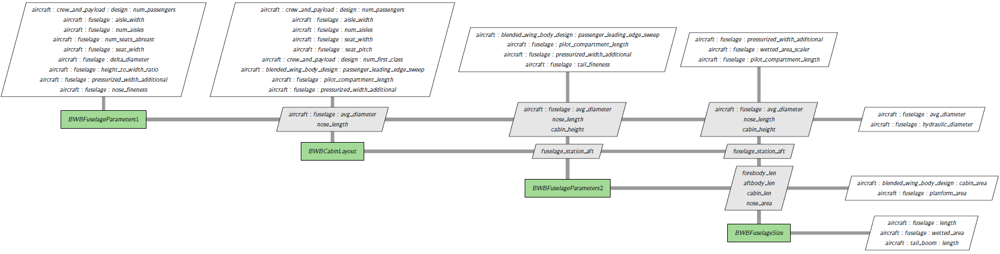

GASP Based Blended Wing Body Modeling#
The blended wing body aircraft is modeled following GASP implementation. It is important to point out the the Aviary implementation is limited to certain assumptions. To model a special model, the user must read this document carefully to see it is within the scope of the Aviary implementation.
GASP Based Geometry#
Comparing to traditional tube and wing model, Blended wing body (BWB) modeling has four major new changes in geometry subsystems:
partially buried engine in fuselage,
Fuselage layout and size parameters,
Computation of wing tank fuel volume (either with wing fold or not),
Exposed wing area computation.
We will explain some details of each feature in this document.
Partially Buried Engine in Fuselage#
In a BWB, an engine can be partially buried in fuselage. Supposed that the nacelle has the diameter \(D\) and the buried diameter is \(d\). In Aviary, Let’s denote the ratio \(x = d/D\). So, \(0 \le x \le 1\). This variable is called Aircraft.Nacelle.PERCENT_DIAM_BURIED_IN_FUSELAGE. Then the percentage of perimeter not buried in fuselage is \(f(x) = 1 - \arccos(2*(0.5 -x))/\pi\). As we see, if the nacelle is not buried in fuselage at all, then \(x = 0\) and \(f(x) = 1\). Note that function \(f(x)\) has infinity derivatives at \(x = 0\) and \(x = 1\). We have to use two cubic functions instead near the two ends. This is shown in the following image:

The wetted area of nacelle can be computed as usual but scaled down by a factor \(f(x)\).
Fuselage Layout#
In the current implementation, a few parameters are fixed for the first class cabin:
Parameters |
Values |
Units |
|---|---|---|
length of first class lav, galley & closet |
8.0 |
ft |
first class seat width |
28.0 |
inch |
first class seat pitch |
36.0 |
inch |
Number of aisles in first class |
2 |
unitless |
First class aisle width |
24.0 |
inch |
Length of first class/economy class aisle |
5.0 |
ft |
Tourist class passengers per lav |
78 |
unitless |
Lav width |
42.0 |
inch |
Tourist class galley area per passenger |
0.15 |
ft**2 |
Aviary will try to fit the seats in both first class and economy class based on the above and following parameters:
Parameters |
Units |
|---|---|
Aircraft.Fuselage.SEAT_WIDTH |
inch |
Aircraft.Fuselage.NUM_AISLES |
unitless |
Aircraft.Fuselage.AISLE_WIDTH |
inch |
Aircraft.CrewPayload.Design.SEAT_PITCH_ECONOMY |
inch |
Aircraft.CrewPayload.Design.NUM_PASSENGERS |
unitless |
Aircraft.CrewPayload.Design.NUM_FIRST_CLASS |
unitless |
Aircraft.BWB.PASSENGER_LEADING_EDGE_SWEEP |
deg |
Aircraft.Fuselage.PILOT_COMPARTMENT_LENGTH |
ft |
Aircraft.Fuselage.AVG_DIAMETER |
ft |
Aircraft.Fuselage.PRESSURIZED_WIDTH_ADDITIONAL |
ft |
nose_length |
ft |
The output is the fuselage station of aft pressure bulkhead. If there is no first class cabin, please set Aircraft.CrewPayload.Design.NUM_FIRST_CLASS to 0.0.
The fuselage size group is shown as follows:

Wing Fuel Volume Computation#
For the wing fuel volume, we first compute its value assuming no wing fold structure. In the case of wing fold, a simple adjustment model from the first computation for the wing fuel volume is implemented using linear interpolation plus factors for wing thickness.
Exposed Wing Area Computation#
For blended wing body aircraft, the exposed wing area refers to the wing section that is not fully integrated or blended into the fuselage, but rather extends outwards, potentially with a distinct edge or separation from the body. It must be computed separately and it will be used in the angle of attack computation.
One of the dependent parameters is Aircraft.Wing.VERTICAL_MOUNT_LOCATION (denoted by \(x\) in this section, where \(0 \le x \le 1\), unitless). Giving \(x\), the body half span at the wing location depends on function \(f(x) = \sqrt{(0.25 - (0.5 - x)^2)}\). Since \(f(x)\) has infinite derivatives at the two ends, we must create two cubic polynomials instead near the ends. The implementation is similar to that of partially buried engine in fuselage and we skip the details here.
Other design parameters are:
Parameters |
Units |
|---|---|
Aircraft.Fuselage.AVG_DIAMETER |
ft |
Aircraft.Fuselage.HEIGHT_TO_WIDTH_RATIO |
unitless |
Aircraft.Wing.SPAN |
ft |
Aircraft.Wing.TAPER_RATIO |
unitless |
Aircraft.Wing.AREA |
ft**2 |
Outputs from Wing Group#
Several geometric parameters are used:
Parameters |
Units |
|---|---|
Aircraft.Wing.ASPECT_RATIO |
unitless |
Aircraft.Wing.TAPER_RATIO |
unitless |
Aircraft.Wing.SWEEP |
deg |
Aircraft.Wing.THICKNESS_TO_CHORD_ROOT |
unitless |
Aircraft.Fuselage.AVG_DIAMETER |
ft |
Aircraft.Wing.THICKNESS_TO_CHORD_TIP |
unitless |
Aircraft.LandingGear.MAIN_GEAR_LOCATION |
ft |
Aircraft.Fuel.WING_FUEL_FRACTION |
unitless |
In BWB model, we assume that the wing has no strut.
If the wing has fold, an additional geometric parameter is needed:
Parameters |
Units |
|---|---|
Aircraft.Wing.FOLDED_SPAN |
ft |
The wing group is shown as follows (assuming no fold):

If we add fold structure, the diagram has two more components WingFoldArea and
BWBWingFoldVolume. Let us de-emphasize other components by compressing all their inputs
and outputs that are not related to fold structure. We also do not show dimensional and non-dimensional conversion of fold calculation.

GASP Base Mass#
After the changes in geometry, several mass computation must be updated. Comparing to traditional tube and wing model, BWB modeling has four major new changes in mass subsystems:
Computation of various design load speeds,
Computation of air conditioning mass and furnishing mass,
Computation of BWB fuselage,
Computation of wing mass for BWB
Design Load#
In the case of tube + wing design, we assume a given wing loading. In the case of BWB, wing loading is replaced by gross mass over exposed wing area:
wing loading = gross mass / exposed wing area
A diagram is shown below. We simplied the inputs and outputs but high light gross mass and exposed wing area.

Equipments Masses and Useful Load#
Air conditioning mass and furnishing mass are part of equipments and useful load masses. In the case of tube + wing design, Aviary uses Aircraft.Fuselage.AVG_DIAMETER as cabin width. In the case of BWB, this parameter must be replaced by hydraulic diameter (Aircraft.Fuselage.HYDRAULIC_DIAMETER). To compute hydraulic diameter, we use cabin width and cabin height to obtain the cabin cross area and then:
hydraulic diameter = (4 * (fuselage cross area) / π)1/2
Fuselage Mass#
Because of the shape of BWB aircraft, the computation of fuselage mass is quite different from conventional aircraft. It is basically an empirical equation based on collected data.
Wing Mass#
In the wing mass computation of conventional aircraft, we assume the cabin width (or fuselage width) is small. But that is not the case for BWB. So, for BWB aircraft, wing span is replaced by:
wing span - cabin width
All other steps are the same.
GASP Based Aerodynamics#
All the BWB related modifications in aerodynamics reside in subsystems/aerodynamics/gasp_based/gaspaero.py. The primary goal is to compute the lift coefficient CL and the drag coefficient CD. Because of the shape of fuselage, the lift effect from the body can not be ignored. The main features are:
1. Computation of body form factor
In the computation of body form drag factor Aircraft.Fuselage.FORM_FACTOR, the fuselage fineness ratio is based on hydraulic diameter instead of fuselage average diameter. Let us denote the body form drag factor as body_form_factor. Then, it holds \({\rm body\_form\_factor}(x) = 1 + 1.5x^{1.5} + 7x^3\), where \(x = ({\rm hydraulic diameter}) / ({\rm fuselage length})\).
2. Computation of curve fitting correction factor for Oswald efficiency
In GASP and Aviary, there is a parameter named siwb. It is basically the curve fitting correction factor for Oswald efficiency and it holds \({\rm siwb}(x) = 1 - 0.0088x - 1.7364x^2 - 2.303x^3 + 6.0606x^4\).
For conventional aircraft, \(x = ({\rm cabin width}) / ({\rm wing span})\). For BWB, \(x\) is replaced by hydraulic diameter over wing span.
3. Computation of unified induced drag correction factor
In GASP and Aviary, there is a parameter named ufac. It is basically the unified induced drag correction factor. For conventional aircraft, this factor is usually around 1. For BWB aircraft, we need to set an upper limit 0.975.
All three parameters above are fed into the main component AeroGeom of aero dynamics system AeroSetup for BWB aircraft. This system computes the drag parameters from cruise conditions and geometric parameters. The basic diagram is shown below:

4. Computation of body lift curve slope of fuselage
For BWB aircraft, lift coefficient depends on both the wing and the body. A new component BWBBodyLiftCurveSlope is added to compute the body lift curve slope (body_lift_curve_slope) of fuselage for a given Mach number. Suppose that we are given the lift curve slope (CLALPH_B0 or Aircraft.Fuselage.LIFT_CURVE_SLOPE_MACH0) of fuselage at Mach 0, then for any given Mach, we define
body_lift_curve_slope = CLALPH_B0 / (1.0 - mach2)1/2
Note: This formula is valid only for Mach number less than 1. We advise that a BWB model should limit the Mach number to within 0.8 for accuracy. For Mach number greater than 0.8, please consider using table based aero model.
5. Computation of lift coeficient from the wing
Depending on whether it is during a cruise flight or low speed flight, the computations of lift coefficient are different. For cruise, the computation is relative clean while for low speed, we must take ground effect into considerations. The two situations are shown in the following two diagrams.
For cruise:

For low speed:

This model has its limitations. Generally speaking, it is good for number of passengers fewer than 250. There are other limitations. For detailed discussions, we refer readers to theory guide.
6. Computation of total lift coefficient
The total lift coefficient is a scaled sum of lift coeficient of the wings and the lift coefficient of the body. For the wing, the ratio of the exposed wing area vs the wing area scales the the lift coefficient of the wings. For the body, the ratio of planform area over the the wing area.
GASP Based Aerodynamics using an aerodynamics table#
As we point out earlier, the designed maximum cruise Mach number should be less than or equal to 0.8. If the Mach number is greater than 0.8, the lift and drag coefficients can be computed using table based modeling TabularCruiseAero. Aero tables are usually the results of high fidelity CFD tools. Aviary provide a tool to convert GASP aero tables to Aviary format. In terms of the modeling, there is no special treatment for BWB aircraft than traditional aircraft.